Change analysis for Denmark for PRIMAP-hist v2.6.1_final compared to
v2.6_final
Overview over
emissions by sector and gas
The following figures show the aggregate national total emissions
excluding LULUCF AR6GWP100 for the country reported priority scenario.
The dotted linesshow the v2.6_final data.
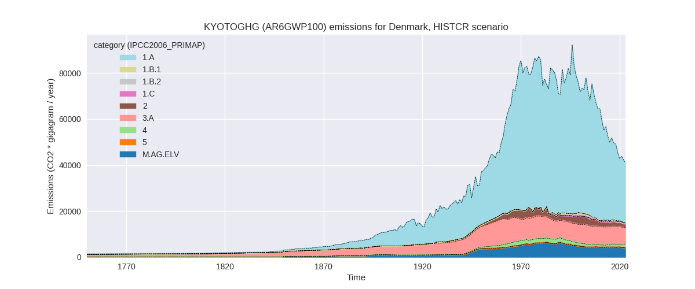
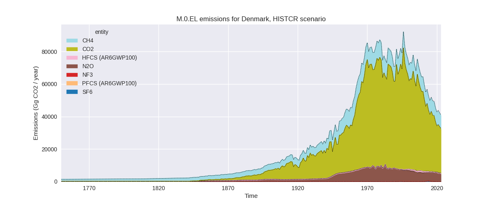
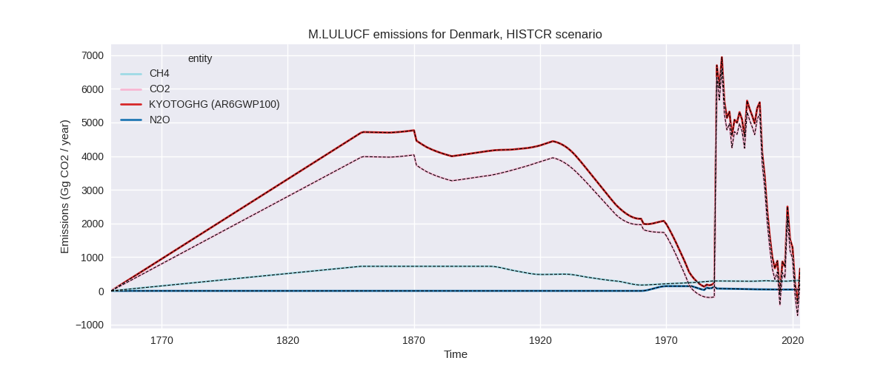
The following figures show the aggregate national total emissions
excluding LULUCF AR6GWP100 for the third party priority scenario. The
dotted linesshow the v2.6_final data.
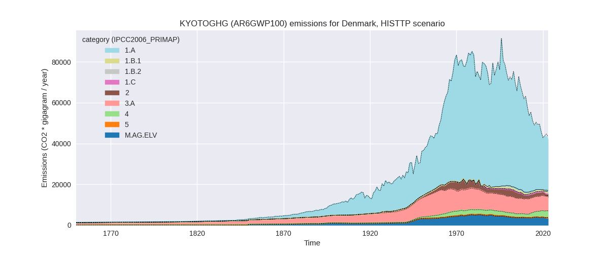
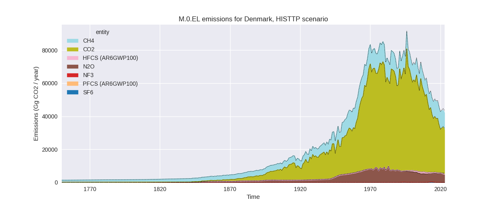
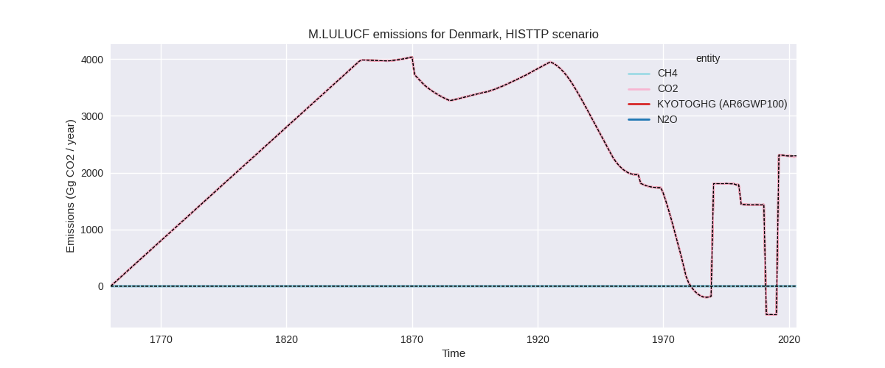
Overview over changes
In the country reported priority scenario we have the following
changes for aggregate Kyoto GHG and national total emissions excluding
LULUCF (M.0.EL):
- Emissions in 2023 have changed by -0.9%% (-370.85 Gg CO2 / year)
- Emissions in 1990-2023 have changed by -0.3%% (-210.63 Gg CO2 / year)
In the third party priority scenario we have the following changes
for aggregate Kyoto GHG and national total emissions excluding LULUCF
(M.0.EL):
- Emissions in 2023 have changed by -2.8%% (-1200.46 Gg CO2 / year)
- Emissions in 1990-2023 have changed by -1.1%% (-727.99 Gg CO2 / year)
Most
important changes per scenario and time frame
In the country reported priority scenario the
following sector-gas combinations have the highest absolute impact on
national total KyotoGHG (AR6GWP100) emissions in 2023
(top 5):
- 1: 2, N2O with -286.14 Gg CO2 / year (-93.7%)
- 2: M.AG.ELV, N2O with -95.26 Gg CO2 / year (-2.5%)
- 3: 2, CO2 with -73.24 Gg CO2 / year (-5.3%)
- 4: 2, HFCS (AR6GWP100) with 53.10 Gg CO2 / year (24.1%)
- 5: 1.B.2, CH4 with 30.42 Gg CO2 / year (42.9%)
In the country reported priority scenario the
following sector-gas combinations have the highest absolute impact on
national total KyotoGHG (AR6GWP100) emissions in
1990-2023 (top 5):
- 1: 2, N2O with -137.63 Gg CO2 / year (-28.1%)
- 2: 2, CO2 with -81.19 Gg CO2 / year (-5.3%)
- 3: 2, HFCS (AR6GWP100) with 10.35 Gg CO2 / year (1.7%)
- 4: M.AG.ELV, N2O with -2.80 Gg CO2 / year (-0.1%)
- 5: 1.B.2, CH4 with 0.89 Gg CO2 / year (0.3%)
In the third party priority scenario the following
sector-gas combinations have the highest absolute impact on national
total KyotoGHG (AR6GWP100) emissions in 2023 (top
5):
- 1: 3.A, CH4 with -403.92 Gg CO2 / year (-5.9%)
- 2: M.AG.ELV, N2O with -269.89 Gg CO2 / year (-7.4%)
- 3: 2, N2O with -206.44 Gg CO2 / year (-74.4%)
- 4: 2, CO2 with -107.51 Gg CO2 / year (-8.0%)
- 5: 4, CH4 with -97.85 Gg CO2 / year (-3.2%)
In the third party priority scenario the following
sector-gas combinations have the highest absolute impact on national
total KyotoGHG (AR6GWP100) emissions in 1990-2023 (top
5):
- 1: 1.B.2, CH4 with -466.67 Gg CO2 / year (-56.5%)
- 2: 4, CH4 with -110.22 Gg CO2 / year (-5.3%)
- 3: 2, N2O with -87.76 Gg CO2 / year (-17.4%)
- 4: 3.A, CH4 with -20.86 Gg CO2 / year (-0.3%)
- 5: 5, N2O with -18.90 Gg CO2 / year (-8.6%)
Notes on data changes
Here we list notes explaining important emissions changes for the
country.
- CRT data has been included but replaces official data reported to
the EU which does not show noteworthy differences for most sectors and
gases.
- For N2O in 2.B we have lower emissions now as the data reported to
the EU showed missing values which were filled from EDGAR while the CRT
data is zero from 2005 on.
- CO2 emissions in 2.D are lower in CRT than in the EU data.
- Other changes in the CR scenario are limited to 2023 and come from
changes in third party data that is used for extrapolation.
- In the TP scenario changes are higher but still small.
- Agricultural emissions are lower in 2023 because of a drop in FAO
data in 2022
- Non-zero emissions for N2O in 2.B have been removed in EDGAR 2024
and thus PRIMAP-hist emissions are now zero.
- Waste CH4 emissions are lower due to lower emissions in EDGAR
- The highest change in cumulative emissions comes from lower fugitive
CH4 (1.B.2). This also comes from EDGAR
Changes by sector and gas
For each scenario and time frame the changes are displayed for all
individual sectors and all individual gases. In the sector plot we use
aggregate Kyoto GHGs in AR6GWP100. In the gas plot we usenational total
emissions without LULUCF.
country reported scenario
2023
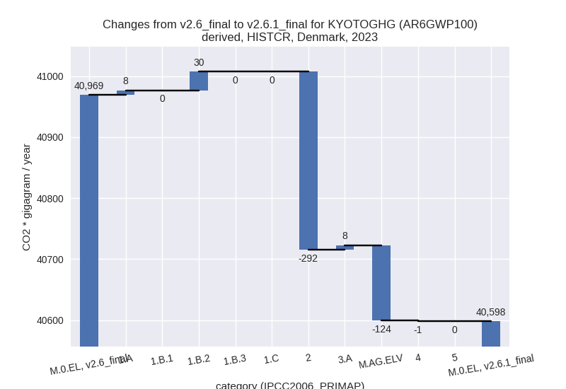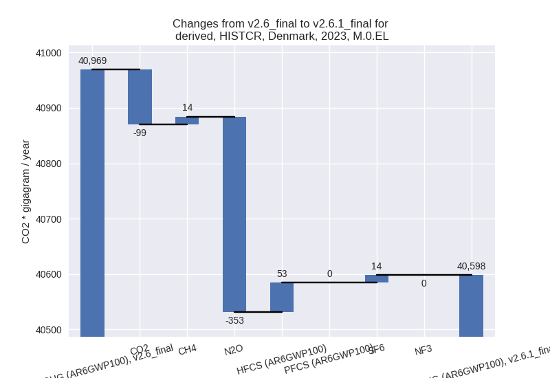
1990-2023
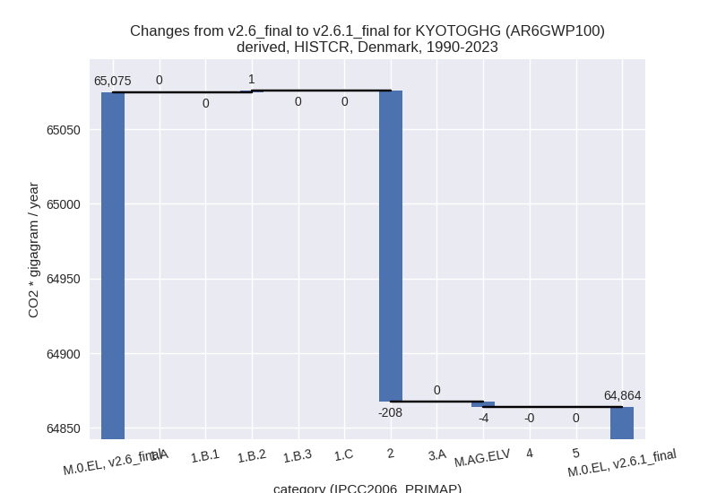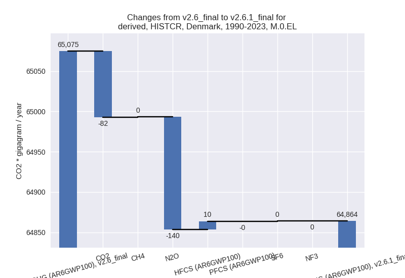
third party scenario
2023
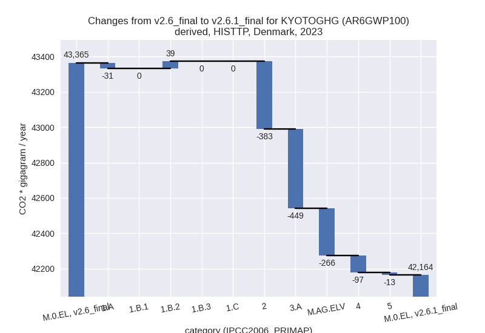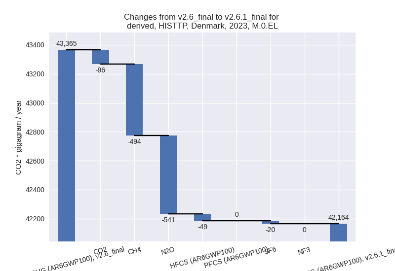
1990-2023
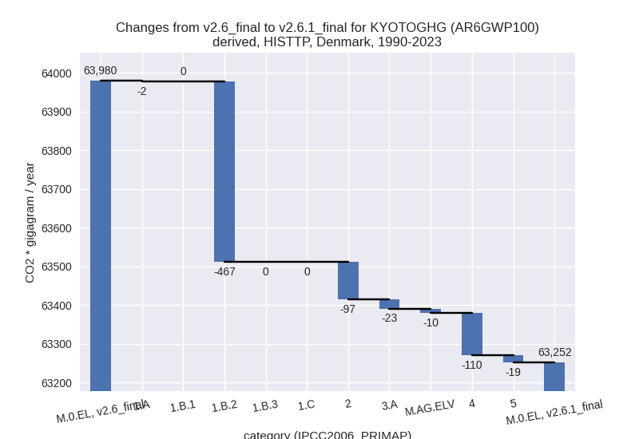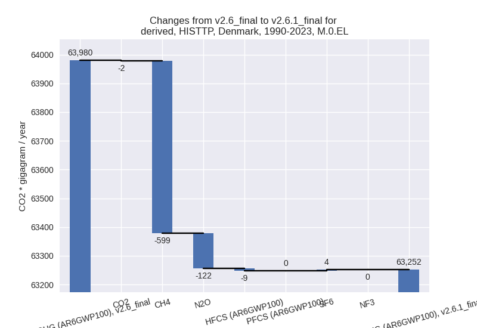
Detailed changes for the
scenarios:
country reported scenario
(HISTCR):
Most important changes
per time frame
For 2023 the following sector-gas combinations have
the highest absolute impact on national total KyotoGHG (AR6GWP100)
emissions in 2023 (top 5):
- 1: 2, N2O with -286.14 Gg CO2 / year (-93.7%)
- 2: M.AG.ELV, N2O with -95.26 Gg CO2 / year (-2.5%)
- 3: 2, CO2 with -73.24 Gg CO2 / year (-5.3%)
- 4: 2, HFCS (AR6GWP100) with 53.10 Gg CO2 / year (24.1%)
- 5: 1.B.2, CH4 with 30.42 Gg CO2 / year (42.9%)
For 1990-2023 the following sector-gas combinations
have the highest absolute impact on national total KyotoGHG (AR6GWP100)
emissions in 1990-2023 (top 5):
- 1: 2, N2O with -137.63 Gg CO2 / year (-28.1%)
- 2: 2, CO2 with -81.19 Gg CO2 / year (-5.3%)
- 3: 2, HFCS (AR6GWP100) with 10.35 Gg CO2 / year (1.7%)
- 4: M.AG.ELV, N2O with -2.80 Gg CO2 / year (-0.1%)
- 5: 1.B.2, CH4 with 0.89 Gg CO2 / year (0.3%)
Changes in the main sectors for aggregate KyotoGHG (AR6GWP100)
are
- 1: Total sectoral emissions in 2022 are 27413.56 Gg
CO2 / year which is 65.4% of M.0.EL emissions. 2023 Emissions have
changed by 0.1% (38.18 Gg CO2 /
year). 1990-2023 Emissions have changed by 0.0% (1.12 Gg CO2 / year).
- 2: Total sectoral emissions in 2022 are 1666.66 Gg
CO2 / year which is 4.0% of M.0.EL emissions. 2023 Emissions have
changed by -15.2% (-292.16 Gg CO2 /
year). 1990-2023 Emissions have changed by -7.7% (-208.32 Gg CO2 / year). For 2023
the changes per gas
are:
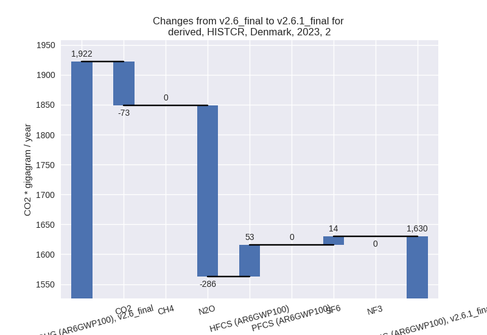
For 1990-2023 the changes per gas
are:
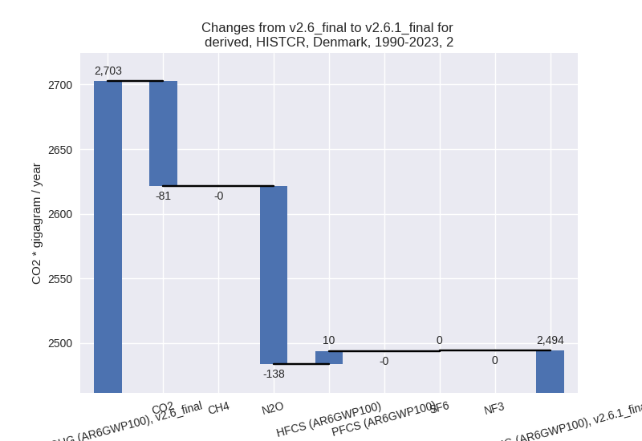
- M.AG: Total sectoral emissions in 2022 are 11624.45
Gg CO2 / year which is 27.7% of M.0.EL emissions. 2023 Emissions have
changed by -1.0% (-116.03 Gg CO2 /
year). 1990-2023 Emissions have changed by -0.0% (-3.41 Gg CO2 / year).
- 4: Total sectoral emissions in 2022 are 1223.65 Gg
CO2 / year which is 2.9% of M.0.EL emissions. 2023 Emissions have
changed by -0.1% (-0.83 Gg CO2 /
year). 1990-2023 Emissions have changed by -0.0% (-0.02 Gg CO2 / year).
- 5: No data
third party scenario (HISTTP):
Most important changes
per time frame
For 2023 the following sector-gas combinations have
the highest absolute impact on national total KyotoGHG (AR6GWP100)
emissions in 2023 (top 5):
- 1: 3.A, CH4 with -403.92 Gg CO2 / year (-5.9%)
- 2: M.AG.ELV, N2O with -269.89 Gg CO2 / year (-7.4%)
- 3: 2, N2O with -206.44 Gg CO2 / year (-74.4%)
- 4: 2, CO2 with -107.51 Gg CO2 / year (-8.0%)
- 5: 4, CH4 with -97.85 Gg CO2 / year (-3.2%)
For 1990-2023 the following sector-gas combinations
have the highest absolute impact on national total KyotoGHG (AR6GWP100)
emissions in 1990-2023 (top 5):
- 1: 1.B.2, CH4 with -466.67 Gg CO2 / year (-56.5%)
- 2: 4, CH4 with -110.22 Gg CO2 / year (-5.3%)
- 3: 2, N2O with -87.76 Gg CO2 / year (-17.4%)
- 4: 3.A, CH4 with -20.86 Gg CO2 / year (-0.3%)
- 5: 5, N2O with -18.90 Gg CO2 / year (-8.6%)
Changes in the main sectors for aggregate KyotoGHG (AR6GWP100)
are
- 1: Total sectoral emissions in 2022 are 28035.11 Gg
CO2 / year which is 64.6% of M.0.EL emissions. 2023 Emissions have
changed by 0.0% (7.86 Gg CO2 /
year). 1990-2023 Emissions have changed by -1.0% (-468.49 Gg CO2 / year).
- 2: Total sectoral emissions in 2022 are 1686.86 Gg
CO2 / year which is 3.9% of M.0.EL emissions. 2023 Emissions have
changed by -18.9% (-383.46 Gg CO2 /
year). 1990-2023 Emissions have changed by -3.7% (-96.50 Gg CO2 / year). For 2023 the
changes per gas
are:
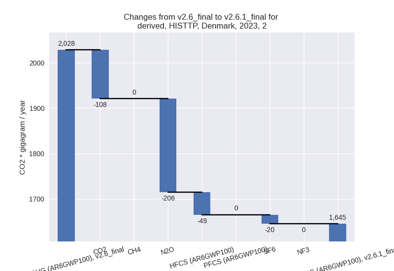
For 1990-2023 the changes per gas
are:
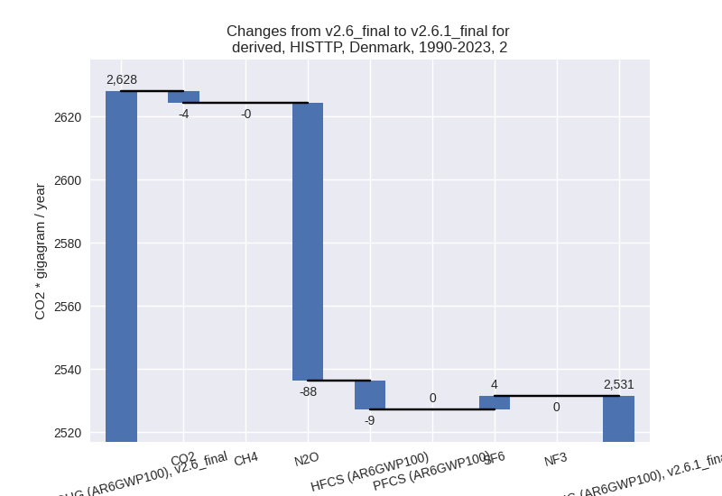
- M.AG: Total sectoral emissions in 2022 are 10493.59
Gg CO2 / year which is 24.2% of M.0.EL emissions. 2023 Emissions have
changed by -6.4% (-714.89 Gg CO2 /
year). 1990-2023 Emissions have changed by -0.3% (-33.81 Gg CO2 / year). For 2023 the
changes per gas
are:
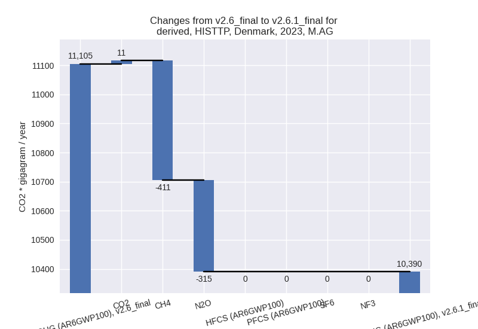
The changes come from the following subsectors:
- 3.A: Total sectoral emissions in 2022 are 6950.06
Gg CO2 / year which is 66.2% of category M.AG emissions. 2023 Emissions
have changed by -6.1% (-448.92 Gg
CO2 / year). 1990-2023 Emissions have changed by -0.3% (-23.35 Gg CO2 / year). For 2023 the
changes per gas
are:
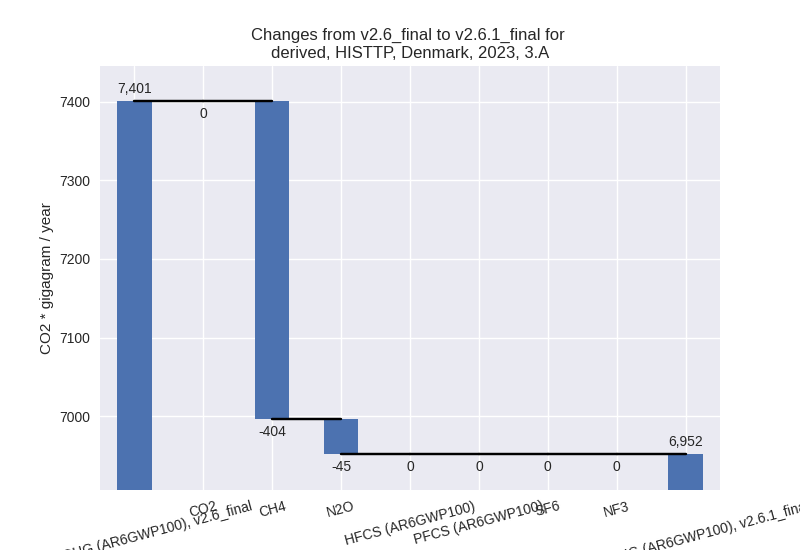
There is no subsector information available in PRIMAP-hist.
- M.AG.ELV: Total sectoral emissions in 2022 are
3543.53 Gg CO2 / year which is 33.8% of category M.AG emissions. 2023
Emissions have changed by -7.2%
(-265.97 Gg CO2 / year). 1990-2023 Emissions have changed by -0.3% (-10.46 Gg CO2 / year). For 2023 the
changes per gas
are:
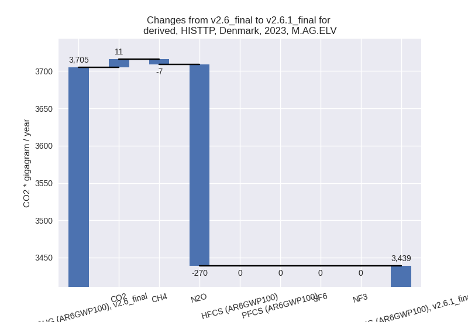
There is no subsector information available in PRIMAP-hist.
- 4: Total sectoral emissions in 2022 are 3106.30 Gg
CO2 / year which is 7.2% of M.0.EL emissions. 2023 Emissions have
changed by -2.9% (-97.04 Gg CO2 /
year). 1990-2023 Emissions have changed by -4.9% (-110.28 Gg CO2 / year). For 2023
the changes per gas
are:
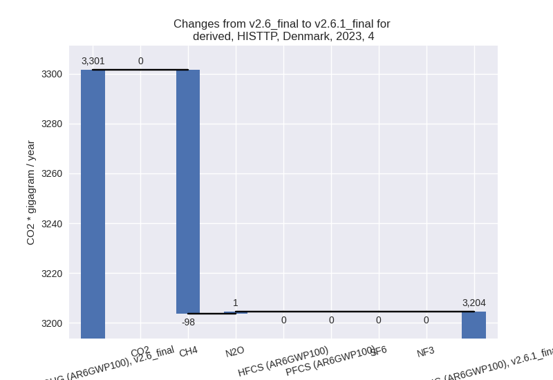
For 1990-2023 the changes per gas
are:
- 5: Total sectoral emissions in 2022 are 92.29 Gg
CO2 / year which is 0.2% of M.0.EL emissions. 2023 Emissions have
changed by -13.0% (-12.93 Gg CO2 /
year). 1990-2023 Emissions have changed by -8.6% (-18.90 Gg CO2 / year). For 2023 the
changes per gas
are:
For 1990-2023 the changes per gas
are:
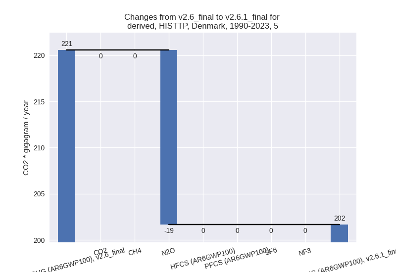